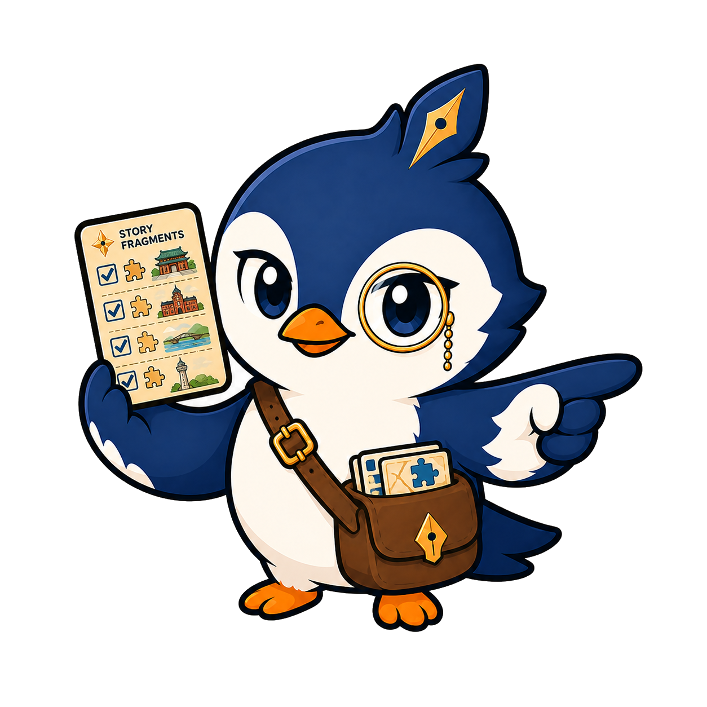

여행자 설정
언어를
선택해주세요
여행자 설정
국가 또는 지역을
선택해주세요
서비스 제공 범위를 설정해 주세요.
중국인 관광객 모드
중국 여행자의 시선으로
장소를 해석합니다
🇨🇳 중국인 관광객 맞춤 해설
기록새가 철도역, 항구도시, 개항거리의 맥락을 바탕으로 목포역의 이야기를 중국 여행자에게 익숙한 관점으로 풀어줍니다.
中文摘要：将以中国游客熟悉的铁路、港口和城市记忆为线索解释木浦站。
여행자 설정
어떻게
불러드릴까요?
여정 속 기록에 남길 이름을 정해주세요.
첫 기록 준비
당신의 첫 기록으로
여정을 시작하세요
지금 보고 있는 장면을 남겨보세요.
장소를 알아볼 수 있는 단서가 함께 보이면 좋아요.
🪶
첫 기록을 남기면, 이 여정은 조금 다른 방향으로 흘러갈지도 모릅니다.
첫 기록 입력
장면 기록하기
지금 보이는 장면을 기록해주세요.
간판, 건물, 거리 풍경이 함께 보이면 좋아요.
🪶
사진 속에 남아 있는 장소의 단서를 살펴볼게요.
장소 후보 탐색
⌕
사진 속 장소 단서를
해석하고 있어요
간판, 건물 윤곽, 거리 구조를 바탕으로
현재 장면과 가까운 장소를 찾고 있습니다.
장소 후보 확인
목포역 일대로
추정됩니다
분석 단서
목포역 간판 · 역 앞 광장 · 원도심 진입로
업로드한 장면에서 목포역과 가까운 시각 단서가 확인되었습니다. 이곳에서 목포역의 이야기 조각을 찾아볼 수 있습니다.
?
현재 장면과 가장 가까운 장소 후보를 찾았습니다. 이곳이 목포역 일대가 맞나요?

기록새가 첫 기록에 반응했습니다
목포역이라… 목포의 이야기가 시작되기 좋은 곳에 기록을 남겼네?
화면을 터치해 계속하기목포역 이야기 탐색
세 개의 이야기 조각을
찾아볼까요?
좋아. 첫 번째 이야기 조각은 목포역에 있어. 목포역으로 이동해 기록을 시작해보자.
이야기 조각 1
목포역 간판을
찾아보세요
미션
목포의 첫 관문
역 이름이 적힌 간판은 목포로 들어오는 첫 관문을 알려주는 단서입니다. 간판이 잘 보이도록 촬영해주세요.
조각 1 기록
목포역 간판이
보이게 기록해주세요
AI 단서 판별
첫 번째 조각이
확인되었습니다
감지 클래스
mokpo_station
신뢰도
87%
판정
이야기 조각 1 획득
과거와 현재 비교
이야기 조각의
시간을 겹쳐봅니다
옛 기록 오버레이
현재 기록과 옛 기록 비교
조각 이야기 1
목포의 첫 관문
해설
목포역 간판은 목포 여행의 시작을 알리는 첫 단서입니다.
해설
이야기를 구성하고 있습니다.
해설
오늘의 기록을 이야기와 연결합니다.
기록새
이 간판이 목포로 들어오는 첫 관문을 알려주는 조각이야.
현재 기록 1
첫 조각의 장소를
5초로 남겨주세요
이야기 조각 2
원도심으로 향하는
길을 찾아보세요
미션
역 앞 광장과 길의 방향
목포역은 역 안에서 끝나는 장소가 아니라, 원도심과 근대문화공간으로 이어지는 출발점입니다.
조각 2 기록
역 앞 길의 방향이
보이게 기록해주세요
AI 단서 판별
두 번째 조각이
확인되었습니다
감지 클래스
mokpo_music_hall
신뢰도
84%
판정
이야기 조각 2 획득
조각 이야기 2
원도심으로 향하는 길
해설
역 앞의 길은 목포의 원도심과 근대문화공간으로 이어집니다.
해설
이야기를 구성하고 있습니다.
해설
오늘의 기록을 이야기와 연결합니다.
기록새
길은 그냥 이동하는 곳이 아니야. 도시의 이야기가 이어지는 선이지.
현재 기록 2
두 번째 조각의 장소를
5초로 남겨주세요
이야기 조각 3
목포근대역사관 2관
촬영해주세요
미션
목포근대역사관 2관
목포근대역사관 2관 건물이 보이도록 촬영해주세요.
조각 3 기록
목포근대역사관 2관
촬영해주세요
AI 단서 판별
세 번째 조각이
확인되었습니다
감지 클래스
mokpo_modern_history_2
신뢰도
82%
판정
이야기 조각 3 획득
조각 이야기 3
사람들이 오가던 역전
해설
목포역 앞에는 이동과 만남, 생활의 흔적이 쌓여 있습니다.
해설
이야기를 구성하고 있습니다.
해설
오늘의 기록을 이야기와 연결합니다.
기록새
역은 기차만 지나가는 곳이 아니야. 사람들의 시간이 쌓이는 곳이지.
현재 기록 3
마지막 조각의 장소를
5초로 남겨주세요
장소 이야기 해금
세 개의 조각이 모여
목포역 이야기가 열렸습니다
✨
목포역 장소 이야기 해금
목포의 첫 관문, 원도심으로 향하는 길, 사람들이 오가던 역전의 기억이 하나로 연결되었습니다.
좋아. 이제 조각들이 이어진 목포역의 전체 이야기를 볼 차례야.
장소 이야기 웹툰 · 1/2
목포역의 세 조각이
하나의 이야기로 이어졌습니다
장소 이야기 웹툰 · 2/2
목포역의 세 조각이
하나의 이야기로 이어졌습니다
세 조각을 모두 모았네. 이제 목포역이 단순한 역이 아니라 도시의 기억으로 보일 거야.
장소 이해 퀴즈
목포역의 세 조각은
무엇을 보여줬을까요?
Question
목포역 이야기가 완성된 이유는?
조각 3개가 연결되며 목포역은 어떤 장소로 해석되었을까요?
퀴즈 결과
정답입니다
📜
목포역 장소 이해 완료
목포역이 목포의 첫 관문이자, 원도심과 생활의 기억으로 이어지는 장소임을 이해했습니다.
이제 네가 남긴 현재 기록들을 하나의 여정필름으로 엮어볼게.
여정필름
당신의 목포역 기록이
하나로 이어졌습니다
사용자가 각 조각 지점에서 남긴 현재 기록이 하나의 여정필름으로 엮였습니다.
다음 장소 추천
목포역 이야기 다음에
이어볼 장소를 선택해주세요
후보를 누르면 추천 근거와 간략 약도를 확인할 수 있습니다.
세 후보 중 한 곳을 눌러 자세히 확인해주세요.
추천 장소 확인
목포근대역사관 1관
772m
도보 12분
목포역
근대역사관 1관
목포역에서 원도심으로 이동하며 목포의 근대 도시 이야기를 이어서 살펴볼 수 있는 장소입니다.
다음 기록 예약
다음 장소가
예약되었습니다
🧭
목포근대역사관 1관 기록 예약
예약한 장소로 이동한 뒤 다시 첫 기록을 남기면, 목포역에서 시작한 여정이 다음 장소의 이야기로 이어집니다.
좋아. 다음 기록은 그곳에서 이어가자.